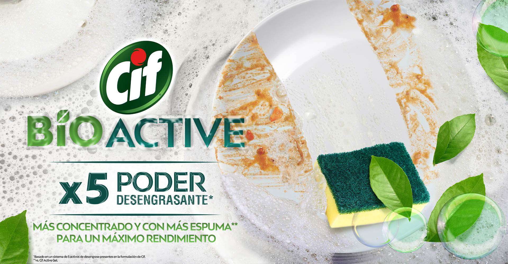

Nueva fórmula
El nuevo detergente de Cif con tecnología BioActive rinde un 30% más* , gracias a su mayor concentración. El secreto es que tiene más activos de limpieza que la fórmula anterior, lo que garantiza que, aplicando una sola gota, se genera más espuma y permite lavar mayor cantidad de platos con la misma cantidad de producto.

Tiene un X5 Poder Desengrasante* que elimina la grasa difícil desde la primera pasada, dejando toda tu vajilla limpia y brillante.

Cuidado del Medio Ambiente
La tecnología Bioactive de Cif tiene 100% activos biodegradables . Sus fragancias son también biodegradables y neutralizan los malos olores de la vajilla. Y sus botellas son hechas 100% con plástico reciclado , es decir no se utiliza resina nueva, sino que se usa PET reciclado. A la vez, son 100% reciclables una vez usados.

¿Cómo funciona?
Para usar el producto aplicá directamente en la esponja, humedecé y apretá para generar espuma. Una vez que hayas terminado de lavar, enjuagá tu vajilla en agua caliente o fría.
- NUEVA FÓRMULA CON TECONOLOGÍA BIOACTIVE
- RINDE UN 30% MÁS*
- FÓRMULA CON 100% ACTIVOS BIODEGRADABLES
- DESENGRASA EN UNA SOLA PASADA
-
NUEVAS FRAGANCIAS BIODEGRADABLES CON
TECNOLOGÍA NEUTRALIZADORA DE MALOS OLORES